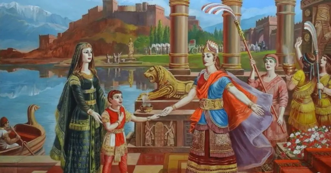

Մովսես Խորենացու «Հայոց պատմության» էջերում գրառված «Արա Գեղեցիկ և Շամիրամ» վիպասքը համաշխարհային գրականության մեջ ստեղծված գեղեցկագույն երկերից մեկն է, որ պատմում է հանուն սիրո կատարված մեծագործությունների մասին․․․ Աստվածային գեղեցկության տեր Արա Գեղեցիկով հմայված՝ հարավում իշխող Շամիրամն առաջարկում է նրան իր ձեռքը և մեծ թագավորությունը։ Արան չի գայթակղվում առաջարկներով և մերժում է Շամիրամին՝ հավատարիմ մնալով իր տիկնոջը՝ Նվարդին․․․ Սա վիպասքում փառաբանվող առաջին մեծագործությունն է՝ հրաժարումը աշխարհիկ մեծ իշխանությունից և հարստություններից՝ հանուն սիրելի կնոջ և ընտանիքի։ Արա Գեղեցիկից մերժված և վիրավորված, սակայն նրան անդառնալիորեն սիրահարված Շամիրամը դիմեց պատերազմի և գրավեց նրա երկիրը՝ Այրարատը։ Պատերազմում զոհվեց սիրեցյալը, որին, հնավանդ զրույցի համաձայն, Շամիրամը հարություն տվեց արալեզների օգնությամբ։ Այնուհետև Շամիրամը կառուցեց մեծ ու սքանչելի ամրոց՝ Վանա բերդը, որ կոչվեց Շամիրամակերտ, կանգնեցրեց արձան՝ հանուն արալեզների, կատարեց բազում այլ նշանավոր գործեր՝ թողնելով արձանագրություններ դրանց մասին։ Նա Արա Գեղեցիկի և Նվարդի որդուն՝ Կարդոսին, դարձրեց Հայաստանի կառավարիչ․․․ Շամիրամի կատարածները վիպասքում փառաբանվող երկրորդ մեծագործությունն է՝ նյութական աշխարհի մեծ արժեքների ստեղծումը։ Իսկ վիպասքում փառաբանվող առաջին մեծագործությունը, որ կատարեց Արա Գեղեցիկը, նյութական իշխանությունից ու հարստությունից հրաժարումն էր՝ հանուն ընտանիքի և սիրելի կնոջ հանդեպ հավատարմության։ Մովսես Խորենացու «Հայոց պատմության» էջերում գրառված «Արա Գեղեցիկ և Շամիրամ» վիպասքը համաշխարհային գրականության մեջ ստեղծված գեղեցկագույն երկերից մեկն է, որ պատմում է հանուն սիրո կատարված մեծագործությունների մասին․․․ Աստվածային գեղեցկության տեր Արա Գեղեցիկով հմայված՝ հարավում իշխող Շամիրամն առաջարկում է նրան իր ձեռքը և մեծ թագավորությունը։ Արան չի գայթակղվում առաջարկներով և մերժում է Շամիրամին՝ հավատարիմ մնալով իր տիկնոջը՝ Նվարդին․․․ Սա վիպասքում փառաբանվող առաջին մեծագործությունն է՝ հրաժարումը աշխարհիկ մեծ իշխանությունից և հարստություններից՝ հանուն սիրելի կնոջ և ընտանիքի։ Արա Գեղեցիկից մերժված և վիրավորված, սակայն նրան անդառնալիորեն սիրահարված Շամիրամը դիմեց պատերազմի և գրավեց նրա երկիրը՝ Այրարատը։ Պատերազմում զոհվեց սիրեցյալը, որին, հնավանդ զրույցի համաձայն, Շամիրամը հարություն տվեց արալեզների օգնությամբ։ Այնուհետև Շամիրամը կառուցեց մեծ ու սքանչելի ամրոց՝ Վանա բերդը, որ կոչվեց Շամիրամակերտ, կանգնեցրեց արձան՝ հանուն արալեզների, կատարեց բազում այլ նշանավոր գործեր՝ թողնելով արձանագրություններ դրանց մասին։ Նա Արա Գեղեցիկի և Նվարդի որդուն՝ Կարդոսին, դարձրեց Հայաստանի կառավարիչ․․․ Շամիրամի կատարածները վիպասքում փառաբանվող երկրորդ մեծագործությունն է՝ նյութական աշխարհի մեծ արժեքների ստեղծումը։ Իսկ վիպասքում փառաբանվող առաջին մեծագործությունը, որ կատարեց Արա Գեղեցիկը, նյութական իշխանությունից ու հարստությունից հրաժարումն էր՝ հանուն ընտանիքի և սիրելի կնոջ հանդեպ հավատարմության։
